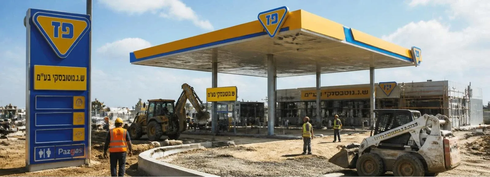
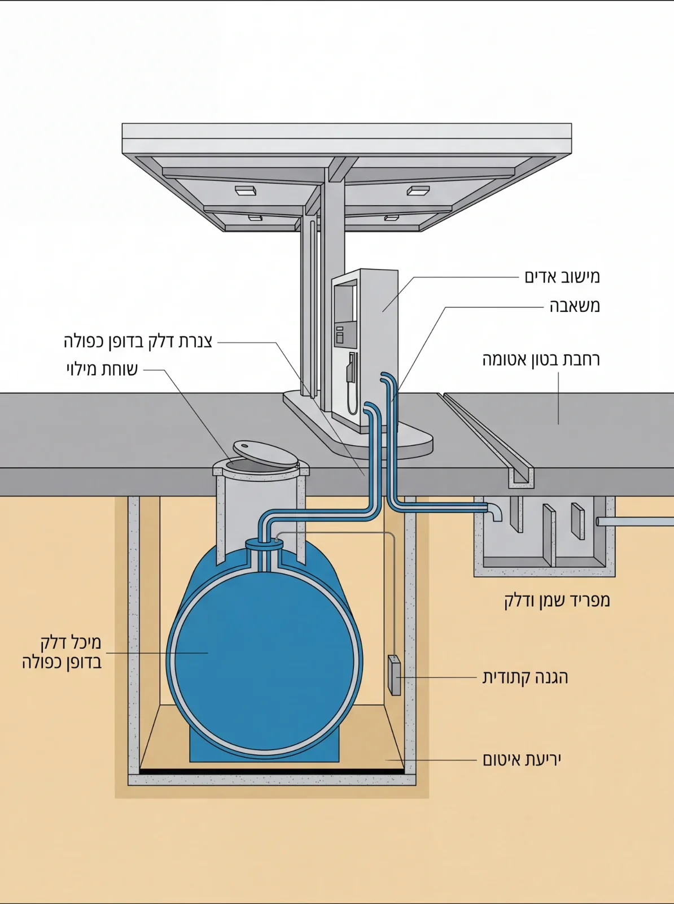
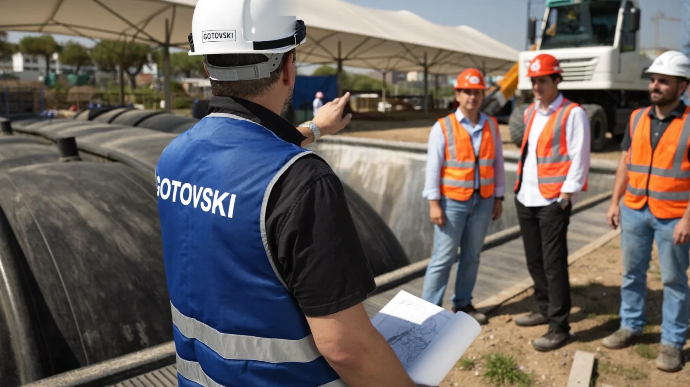
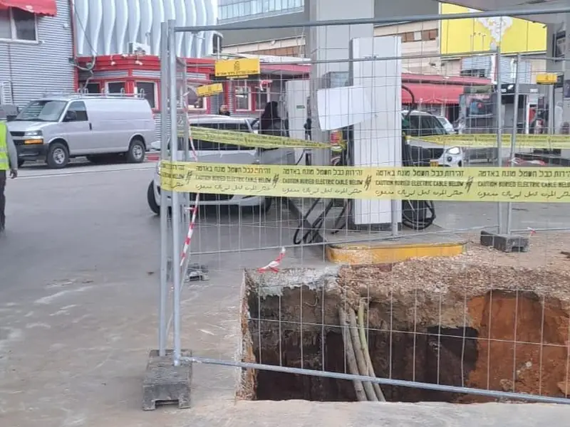
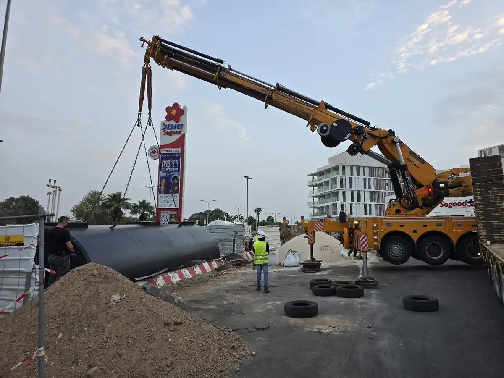
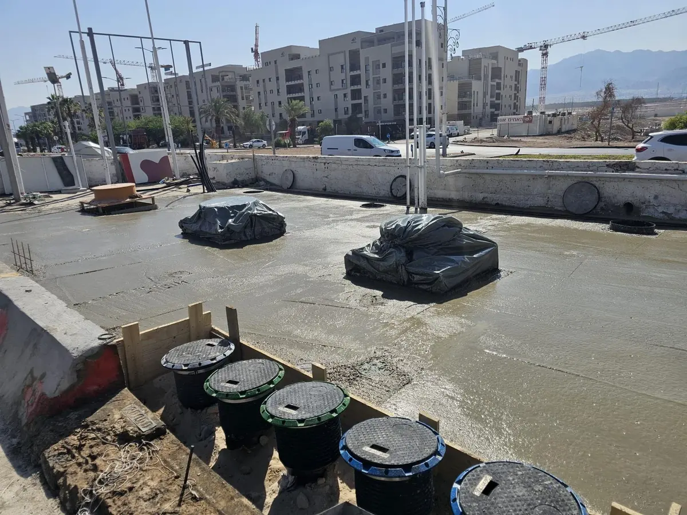
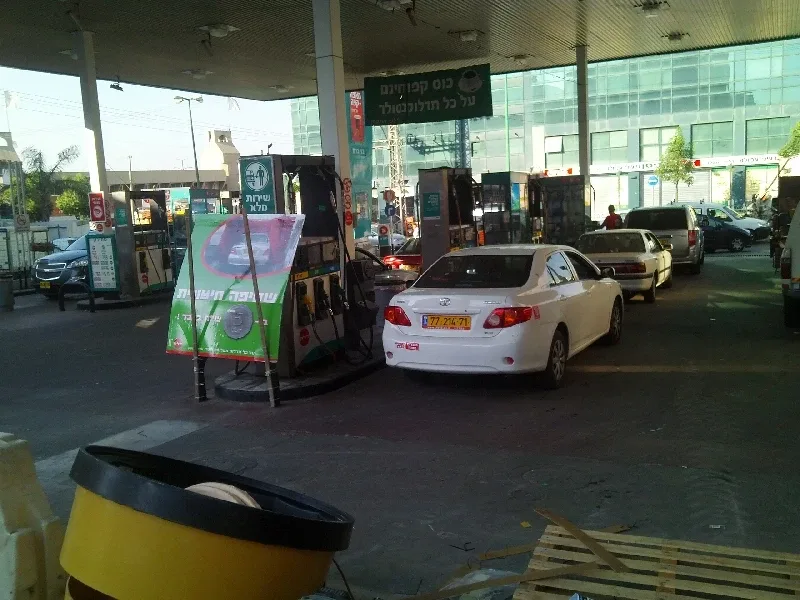

- Home
- Fields of Work
- Fuel Station Construction
Fuel station construction, from the foundations to the pump
Complete construction of a new station: earthworks, tanks, piping, paving, canopy and service building, in coordination with the fuel company and the authorities, handed over with all approvals.

One contractor for the whole station
Building a fuel station combines earthworks, fuel infrastructure, construction, electrical work and dense regulation. When each is done by a different contractor, the gaps between them are where delays and faults appear. We carry out the whole chain ourselves, from the first excavation to the first fill, with our own heavy equipment and permanent crews.
We know the specifications of the major fuel companies and the requirements of the Ministry of Environmental Protection and the Ministry of Labor, and we coordinate with them throughout the project.
What we build beneath the forecourt
Most of the station is sealed in concrete and never seen again. In the cross-section: the double-wall tank on a containment liner, the fill sump above the tank, double-wall fuel piping to the dispenser, the vapor recovery line, a sealed concrete forecourt with a drainage channel to the oil and fuel separator, and cathodic protection beside the tank.
Each of these components is tested and documented before the forecourt is closed, because after the pour there is no cheap way to fix it.

From the pump to the tank
What the customer sees is the dispenser. What keeps it working for decades is under the forecourt, and this is the order of the components.
The order here runs from the forecourt down. The dashed lines mark the direction of fuel flow, from the tank to the dispensers. The dark node is tested and documented before the forecourt is closed.
Every stage of construction, from one contractor
- Earthworks and tank pitSite preparation, precise excavation for the tank pit, controlled backfill and compaction.
- Double-wall tanksPlacement, anchoring, containment liners and interstitial sensors.
- Fuel and vapor pipingDouble-wall piping, Stage II vapor recovery, connections inside sealed sumps.
- Sumps and spill containmentSealed sumps under the dispensers and above the tanks, 5-gallon spill containment at the fill point.
- Concrete forecourts and drainageA sealed forecourt with proper slopes, collection channels and an oil and fuel separator.
- Canopy, dispenser island and service buildingBuilding the canopy, the dispensers, the service building and the technical room.
- Cathodic protection and static groundingSystems that extend tank life and prevent sparks during filling.
- Testing, approvals and handoverDocumented pressure and tightness testing, approvals from the authorities and the fuel company, first fill.
From planning to handover, in five stages
Supporting the designers, coordination with the fuel company and the authorities, and planning the schedule and sequence of work.
Site preparation, tank pit excavation, controlled backfill, drainage and underground utilities.
Installing double-wall tanks, fuel and vapor piping, documented pressure and tightness testing.
Sealed concrete forecourt, oil and fuel separator, canopy, service building and technical room.
Equipment installation, system testing, approvals from the authorities and the fuel company, and first fill.





Nover station, Ashdod: rebuilt to the strictest standards
The station was rebuilt after demolishing the existing one: all fuel infrastructure, concrete slabs, dispenser islands and asphalt were removed. The rebuild included fiberglass fuel piping, a Stage II vapor recovery system, static grounding and cathodic protection systems, a double-wall fill system and standard 5-gallon spill containment. The station was expanded with infrastructure for car wash machines and truck access, including a retaining wall 64 meters long and 3 meters high.
The Hetzi Hinam station in Holon was also rebuilt by us: fuel infrastructure, fill piping, drainage channels, a fuel separator and a tank buried four meters deep. All projects
Construction From the Field
Before you build a station
How long does it take to build a new fuel station?
It depends on the scope, the permits and the ground conditions. In the first call we get to know the project and give a clear schedule estimate, and the quote breaks it down by stage.
At what stage should the contractor come in?
Already at the planning stage. A contractor who knows the requirements of the fuel companies and the authorities spots early the details that are expensive to change once the plans are approved: tank pit depth, piping routes or drainage.
What does handover include?
Documented pressure and tightness testing of all systems, equipment installation, approvals from the authorities and the fuel company, and first fill. The documentation is handed to the client.
Building a station? Let's start with the plans
Send us the project details and we will call you back for a short conversation. If there are plans already, we will gladly review them before quoting. Or call the office directly: 08-622-9307